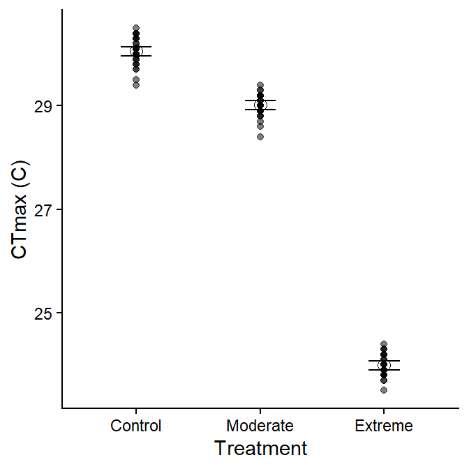
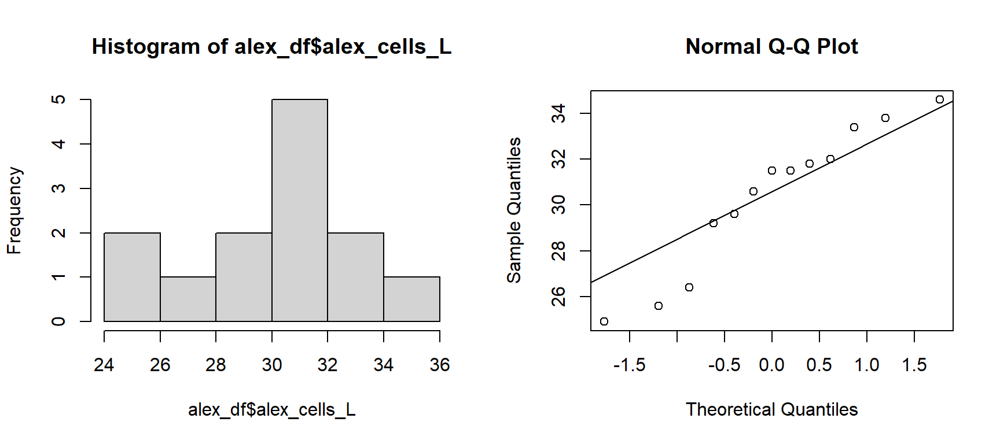
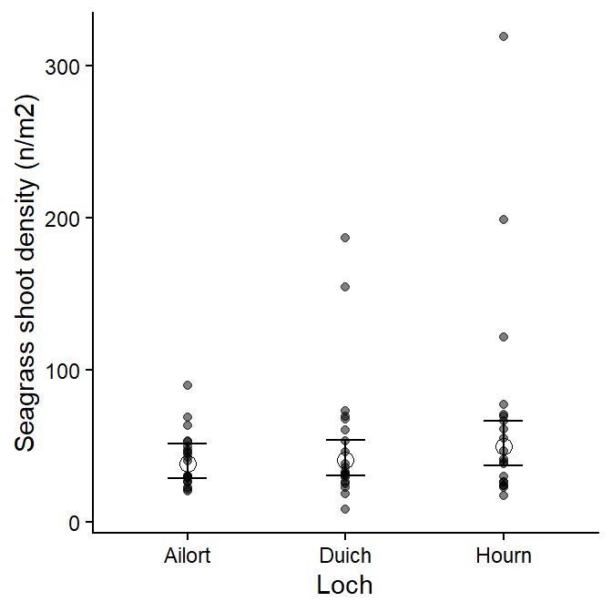
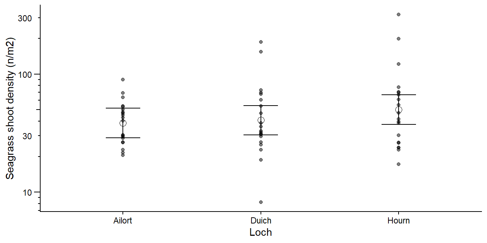
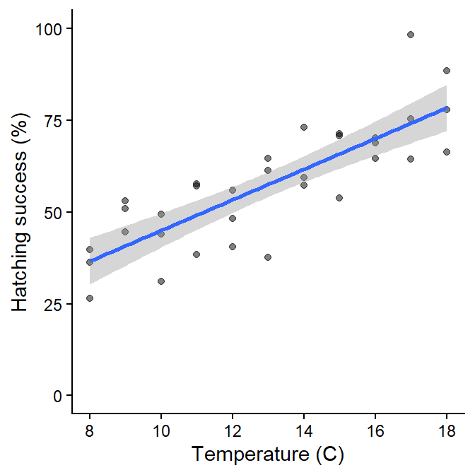

Problem Set 5
Please render this file to .html and submit via Brightspace.
T-tests, ANOVA, and regression
For each scenario, select an appropriate analysis given the dataset. Follow the workflow illustrated in the practical and in the lectures, checking assumptions and applying transformations as needed.
Scenario 1
Research question: Do critical thermal limits change with repeated heatwave exposure in kelp?
In an experiment similar to King et al. 2024, a (hypothetical) H4 student measured critical thermal maxima (CTmax) on the kelp species Laminaria hyperborea under 1) no previous heat exposure, 2) recent moderate heat exposure, and 3) recent extreme heat exposure.
Identify the response and predictor variables, as well as what type of variable each is.
CTmax is the response; it is continuous.
Heat exposure is the predictor; it is categorical.
Next, load the data from the “MHW” sheet in “H2SMS_practicalData.xlsx” and perform appropriate checks.
tibble [90 × 3] (S3: tbl_df/tbl/data.frame)
$ ind_id : num [1:90] 1 1 1 2 2 2 3 3 3 4 ...
$ treatment: chr [1:90] "Control" "Moderate" "Extreme" "Control" ...
$ CTmax : num [1:90] 29.4 29.2 24.1 30.5 29.1 24 30.3 29.2 24 30 ...View code
summary(mhw_df) ind_id treatment CTmax
Min. : 1.0 Length:90 Min. :23.50
1st Qu.: 8.0 Class :character 1st Qu.:24.20
Median :15.5 Mode :character Median :29.00
Mean :15.5 Mean :27.68
3rd Qu.:23.0 3rd Qu.:29.88
Max. :30.0 Max. :30.50 Which analysis is most appropriate?
ANOVA
What is the null hypothesis?
\(\mu_{Control} = \mu_{Moderate} = \mu_{Extreme}\)
Perform the analysis, including assumption checks. Calculate appropriate confidence intervals, make appropriate comparisons, and summarise results concisely in one short paragraph including key statistics.
View code
mhw_aov <- aov(CTmax ~ treatment, data=mhw_df)Assumptions look reasonable. Approximately normally distributed residuals and similar residual variance in each treatment.
View code
summary(mhw_aov) Df Sum Sq Mean Sq F value Pr(>F)
treatment 2 631.3 315.66 5502 <2e-16 ***
Residuals 87 5.0 0.06
---
Signif. codes: 0 '***' 0.001 '**' 0.01 '*' 0.05 '.' 0.1 ' ' 1There is a significant effect of treatment (p < 0.05).
View code
em_df <- emmeans(mhw_aov, specs="treatment")
em_df treatment emmean SE df lower.CL upper.CL
Control 30.05 0.0437 87 29.96 30.14
Moderate 29.02 0.0437 87 28.93 29.10
Extreme 23.99 0.0437 87 23.90 24.07
Confidence level used: 0.95 View code
TukeyHSD(mhw_aov) Tukey multiple comparisons of means
95% family-wise confidence level
Fit: aov(formula = CTmax ~ treatment, data = mhw_df)
$treatment
diff lwr upr p adj
Moderate-Control -1.033333 -1.180801 -0.8858657 0
Extreme-Control -6.063333 -6.210801 -5.9158657 0
Extreme-Moderate -5.030000 -5.177468 -4.8825324 0There was a significant difference in CTmax among all treatments (F2,87=5502, p < 0.001). The individuals in the control showed the most heat tolerance (mean CTmax [95% CI]: 30.1 C [30.0-30.14 C]), with a slight decline in individuals previously exposed to moderate heatwave conditions (29.0 C [28.9-29.1 C]) and a dramatic decrease in heat tolerance for individuals previously exposed to extreme heatwave conditions (24.0 C [23.9-24.1 C]).
Depending on the specific question and focus, you might focus on the mean densities (listing them specifically in text) or on the differences: use the text to emphasize the main results of interest. Further detail can be included in figures and tables.
View code
ggplot(mhw_df, aes(treatment)) +
geom_point(aes(y=CTmax), alpha=0.5) +
geom_point(data=as_tibble(em_df), aes(y=emmean), shape=1, size=3) +
geom_errorbar(data=as_tibble(em_df), aes(ymin=lower.CL, ymax=upper.CL), width=0.25) +
labs(x="Treatment",
y="CTmax (C)")
Scenario 2
Research question: Is the average concentration of Alexandrium spp in an area greater than 40 cells per litre?
In the UK, shellfish cannot be harvested on aquaculture farms if densities of harmful algal species exceed certain levels. For example, Alexandrium spp release paralytic shellfish toxins, and growers are not allowed to harvest when Alexandrium spp exceeds 40 cells per litre.
I’ve collected 13 water samples and enumerated the number of Alexandrium spp cells.
NB: This is not quite how the regulatory monitoring works!
Identify the response and predictor variables, as well as what type of variable each is.
Alexandrium density is the response; it is continuous.
There is not a predictor variable.
Next, load the data from the “Alexandrium” sheet in “H2SMS_practicalData.xlsx” and perform appropriate checks.
tibble [13 × 2] (S3: tbl_df/tbl/data.frame)
$ sample_id : num [1:13] 1 2 3 4 5 6 7 8 9 10 ...
$ alex_cells_L: num [1:13] 29.2 31.8 29.6 25.6 32 33.8 31.5 31.5 30.6 33.4 ...View code
summary(alex_df) sample_id alex_cells_L
Min. : 1 Min. :24.90
1st Qu.: 4 1st Qu.:29.20
Median : 7 Median :31.50
Mean : 7 Mean :30.38
3rd Qu.:10 3rd Qu.:32.00
Max. :13 Max. :34.60 Which analysis is most appropriate?
One-sample t-test
What is the null hypothesis?
\(\mu_{Alex} \leq 40\)
Perform the analysis, including assumption checks. Calculate appropriate confidence intervals, make appropriate comparisons, and summarise results concisely in one short paragraph including key statistics.
View code

Data are reasonably normal.
View code
t.test(alex_df$alex_cells_L, mu=40, alternative="greater")
One Sample t-test
data: alex_df$alex_cells_L
t = -11.134, df = 12, p-value = 1
alternative hypothesis: true mean is greater than 40
95 percent confidence interval:
28.83643 Inf
sample estimates:
mean of x
30.37692 We did not find evidence that the mean density of Alexandrium cells was above 40 cells L-1 (t12=-11.1, p = 1), with an observed mean density of 30.4 (one-tailed 95% confidence limit: 28.8).
Scenario 3
Research question: Does mean seagrass shoot density differ among patches?
The data consists of seagrass shoot density measured by snorkelers in 20 randomly located quadrats in each of 3 lochs in western Scotland.
Identify the response and predictor variables, as well as what type of variable each is.
Seagrass shoot density is the response; it is continuous.
Loch is the predictor; it is categorical.
Next, load the data from the “Seagrass” sheet in “H2SMS_practicalData.xlsx” and perform appropriate checks.
View code
tibble [60 × 3] (S3: tbl_df/tbl/data.frame)
$ loch : chr [1:60] "Hourn" "Hourn" "Hourn" "Hourn" ...
$ quadrat_id: num [1:60] 1 2 3 4 5 6 7 8 9 10 ...
$ obs : num [1:60] 39.7 46.8 26.4 38.4 70.7 69.7 60.9 23.8 66.8 199 ...View code
summary(seagrass_df) loch quadrat_id obs
Length:60 Min. : 1.00 Min. : 8.20
Class :character 1st Qu.: 5.75 1st Qu.: 26.50
Mode :character Median :10.50 Median : 39.90
Mean :10.50 Mean : 54.35
3rd Qu.:15.25 3rd Qu.: 61.55
Max. :20.00 Max. :319.30 View code
seagrass_df$loch <- factor(seagrass_df$loch)Which analysis is most appropriate?
ANOVA
What is the null hypothesis?
\(\mu_{Ailort} = \mu_{Duich} = \mu_{Hourn}\)
Perform the analysis, including assumption checks. Calculate appropriate confidence intervals, make appropriate comparisons, and summarise results concisely in one short paragraph including key statistics.
View code
seagrass_aov <- aov(obs ~ loch, data=seagrass_df)Normality is not good, and the variance seems to be different among lochs, with an apparent increase with the fitted value (i.e., variance increases with the mean). A log transform is a reasonable choice to try.
Not perfect, but much better and close enough.
View code
summary(seagrass_aov) Df Sum Sq Mean Sq F value Pr(>F)
loch 2 0.749 0.3743 0.906 0.41
Residuals 57 23.550 0.4132 There is no significant effect of loch (p > 0.05).
There was no a significant difference in mean seagrass shoot density among lochs (F2,57=0.906, p = 0.41).
View code
ggplot(seagrass_df, aes(loch)) +
geom_point(aes(y=obs), alpha=0.5) +
geom_point(data=em_df, aes(y=exp_mn), shape=1, size=3) +
geom_errorbar(data=em_df, aes(ymin=exp_lo, ymax=exp_hi), width=0.25) +
labs(x="Loch",
y="Seagrass shoot density (n/m2)")
Or, potentially consider the log-scale version:
View code
ggplot(seagrass_df, aes(loch)) +
geom_point(aes(y=obs), alpha=0.5) +
geom_point(data=em_df, aes(y=exp_mn), shape=1, size=3) +
geom_errorbar(data=em_df, aes(ymin=exp_lo, ymax=exp_hi), width=0.25) +
labs(x="Loch",
y="Seagrass shoot density (n/m2)") +
scale_y_log10() +
guides(y="axis_logticks")
Scenario 4
Research question: Does egg hatching success rate of Acartia tonsa depend on temperature?
A (hypothetical) H4 student has decided to replicate one of the experiments of Holste and Peck (2006) to test the effect of temperature on egg hatching success of the copepod Acartia tonsa. Their data are in the “HatchTemp” sheet in “H2SMS_practicalData.xlsx”, containing the temperature (C) and hatching success rate (%) for 3 replicates at each temperature.
Identify the response and predictor variables, as well as what type of variable each is.
Hatching success rate is the response; it is continuous and constrained 0-100.
Temperature is the predictor; it is continuous
Next, load the data from the “HatchTemp” sheet in “H2SMS_practicalData.xlsx” and perform appropriate checks.
View code
tibble [33 × 3] (S3: tbl_df/tbl/data.frame)
$ temp : num [1:33] 8 8 8 9 9 9 10 10 10 11 ...
$ replicate : num [1:33] 1 2 3 1 2 3 1 2 3 1 ...
$ hatch_percent: num [1:33] 26.6 39.7 36.2 53.1 44.6 ...View code
summary(hatchTemp_df) temp replicate hatch_percent
Min. : 8 Min. :1 Min. :26.55
1st Qu.:10 1st Qu.:1 1st Qu.:44.57
Median :13 Median :2 Median :57.32
Mean :13 Mean :2 Mean :57.49
3rd Qu.:16 3rd Qu.:3 3rd Qu.:68.90
Max. :18 Max. :3 Max. :98.25 Which analysis is most appropriate?
Linear regression
What is the null hypothesis?
\(\beta = 0\)
Perform the analysis, including assumption checks. Calculate appropriate confidence intervals, make appropriate comparisons, and summarise results concisely in one short paragraph including key statistics.
View code
hatchTemp_lm <- lm(hatch_percent ~ temp, data=hatchTemp_df)Assumptions look reasonable. Approximately normally distributed residuals and similar residual variance in across temperatures.
Note that the response variable is a percentage. In this case, the assumptions look reasonable for the original data, but be aware that extrapolating to temperatures beyond the measured range would very quickly lead to impossible predictions!
View code
summary(hatchTemp_lm)
Call:
lm(formula = hatch_percent ~ temp, data = hatchTemp_df)
Residuals:
Min 1Q Median 3Q Max
-19.8833 -5.3352 0.2248 5.5588 24.0609
Coefficients:
Estimate Std. Error t value Pr(>|t|)
(Intercept) 3.2321 7.0053 0.461 0.648
temp 4.1739 0.5236 7.972 5.33e-09 ***
---
Signif. codes: 0 '***' 0.001 '**' 0.01 '*' 0.05 '.' 0.1 ' ' 1
Residual standard error: 9.512 on 31 degrees of freedom
Multiple R-squared: 0.6721, Adjusted R-squared: 0.6615
F-statistic: 63.55 on 1 and 31 DF, p-value: 5.326e-09There is a significant effect of temperature (p < 0.05).
View code
confint(hatchTemp_lm) 2.5 % 97.5 %
(Intercept) -11.055296 17.519538
temp 3.106048 5.241831Hatching success rate increased with temperature (mean [95% CI]: 4.17 [3.1-5.24] percentage points per degree C; p < 0.001, R2adj = 0.66, n=33).
View code
ggplot(hatchTemp_df, aes(temp, hatch_percent)) +
geom_point(alpha=0.5) +
geom_smooth(method="lm") +
scale_x_continuous("Temperature (C)", breaks=seq(8, 18, by=2)) +
scale_y_continuous("Hatching success (%)", limits=c(0, 100))